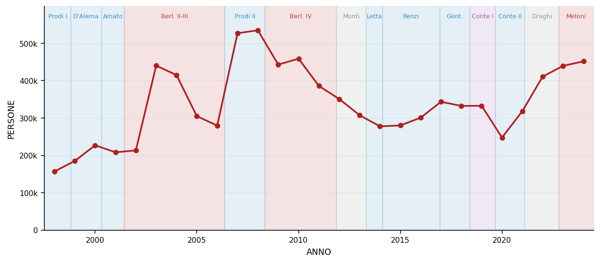
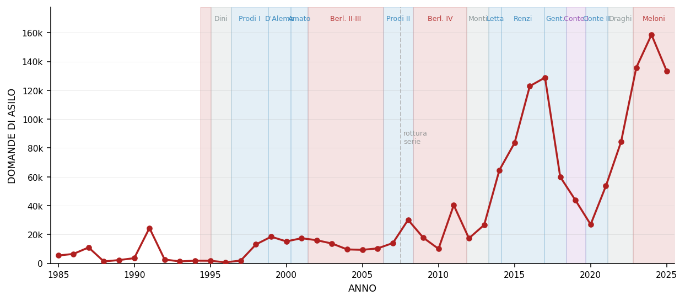
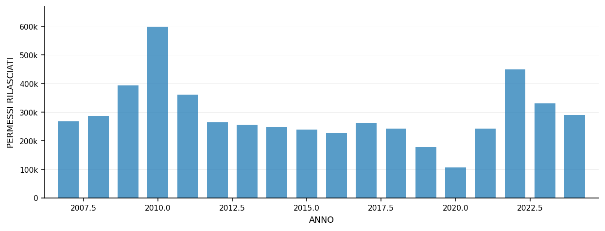

I flussi migratori verso l'Italia sono storicamente eccezionali nel 2024? La risposta dipende da quale fenomeno si osserva — e questa distinzione è esattamente quella che manca nel dibattito politico corrente.
Per le immigrazioni totali — cioè tutti gli ingressi registrati di persone che trasferiscono la residenza in Italia — il 2024 non segna un record. Con 451.583 arrivi, l'Italia si trova al di sotto del picco storico della serie, che risale al 2008 con 534.712 persone (906 immigrati per 100.000 abitanti). Il 2024 è il valore più alto dal 2012, ma è il 15% sotto il massimo storico. Il 2003 mostra un'impennata anomala (440.301 arrivi) riconducibile alla sanatoria Bossi-Fini. La curva lunga racconta un Paese che ha già attraversato fasi di afflusso più intenso, senza che questo abbia generato la stessa carica emotiva nell'agenda pubblica.
Nel confronto europeo, l'Italia del 2024 si colloca al 29° posto su 32 paesi per tasso di immigrazione — con 766 ingressi per 100.000 abitanti contro una media degli altri paesi europei che supera 1.400. Paesi come Spagna (2.650/100k), Irlanda (2.386/100k), Austria (1.406/100k) e Germania (1.292/100k) registrano tassi di gran lunga superiori. L'Italia non è, in termini relativi, un paese ad alta pressione migratoria nell'insieme europeo.
Il quadro cambia radicalmente per le domande di asilo. Questa serie, disponibile dal 1985, mostra un massimo storico nel 2024 con 158.605 domande. La dinamica è strutturalmente diversa da quella delle immigrazioni totali: livelli minimi fino al 2010 (ad eccezione del picco albanese del 1991 con 24.490 domande), una prima ascesa con la crisi mediterranea del 2011–2017 (picco a 128.855 nel 2017), e un nuovo record nel 2023–2024. Le domande di asilo e le immigrazioni totali sono due fenomeni con dinamiche indipendenti, non una sola curva.
La distinzione è editorialmente essenziale: chi invoca un'emergenza senza precedenti ha ragione guardando le domande di asilo — effettivamente al massimo storico — e torto guardando le immigrazioni totali, che superano i livelli attuali già nel 2007–2008. Collassare i due fenomeni in un'unica narrativa non è solo impreciso: oscura le cause, le popolazioni coinvolte e le leve di policy appropriate a ciascuno.
NUMERO DI PERSONE REGISTRATE COME IMMIGRATE NELL'ANNO · VALORI ASSOLUTI · FONTE: EUROSTAT MIGR_IMM1CTZ

Le bande colorate indicano il governo in carica — annotazione contestuale, non analisi causale.
IMMIGRAZIONI PER 100.000 RESIDENTI · MEDIA NON PONDERATA DEI PAESI CON DATI DISPONIBILI · FONTE: EUROSTAT
IMMIGRAZIONI PER 100.000 ABITANTI · ANNO 2024 · ITALIA IN ROSSO · FONTE: EUROSTAT MIGR_IMM1CTZ + DEMO_PJAN
Malta, Cipro e Lussemburgo hanno tassi molto elevati per ragioni strutturali: piccola popolazione e forte flusso intra-europeo o di transito.
NUMERO DI DOMANDE DI ASILO · VALORI ASSOLUTI · FONTE: EUROSTAT MIGR_ASYCTZ (1985–2007) + MIGR_ASYAPPCTZA (2008–2025)

⚠ Rottura di serie al 2007/2008: i due segmenti usano metodologie di raccolta diverse. I valori sono comparabili ma la discontinuità è documentata.
Le bande colorate indicano il governo in carica dal 1994. Il periodo 1985–1993 è fuori dalla serie PM disponibile.
NUOVI PERMESSI RILASCIATI NELL'ANNO · SOLO CITTADINI EXTRA-UE · FONTE: ISTAT

V1, V2, V3 — Immigrazioni: Eurostat MIGR_IMM1CTZ. Filtri: cittadinanza=TOTALE, sesso=TOTALE, età=TOTALE, definizione età=COMPLETA. Aggiornamento Eurostat: 30/03/2026. Serie Italia: 1998–2024. Doppia verifica: MATCH ✓.
V4 — Asilo: Eurostat MIGR_ASYCTZ (1985–2007) + MIGR_ASYAPPCTZA (2008–2025), giuntati al 2007/2008. Rottura di serie documentata. Doppia verifica: MATCH ✓.
V5 — Permessi: ISTAT, dataflow 29_348_DF_DCIS_PERMSOGG1_11. Filtri: area=Italia, sesso=totale, età=totale, cittadinanza=WORLD. Serie: 2007–2024.
Tassi per 100.000: flusso / popolazione al 1° gennaio (DEMO_PJAN) × 100.000. Media europea = media non ponderata dei tassi dei singoli paesi con dati disponibili.
Prodotto con metodo SpecJournalism (pre-fasi SJ-1–SJ-4 completate prima
dell'acquisizione dei dati). Query YAML in queries/. Dati grezzi in output/.